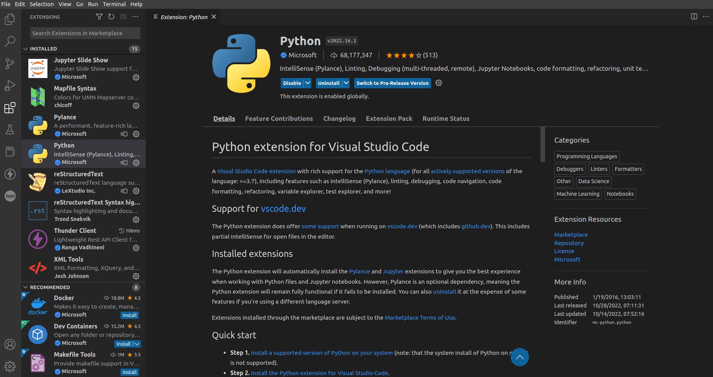
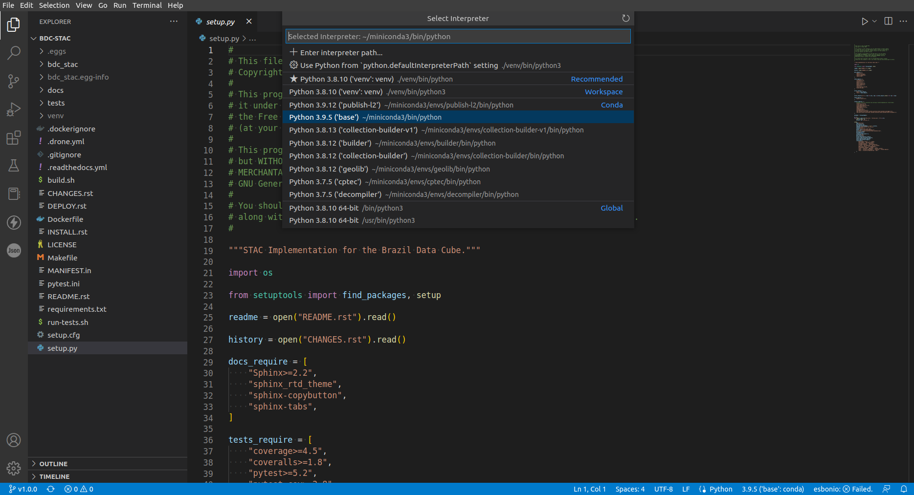

Ambiente Computacional
O ambiente computacional dos desenvolvedores do Brazil Data Cube se baseiam essencialmente nas arquiteturas Linux Ubuntu 20.04. Outras distros linux também são suportadas. Além disso, é possivel rodar em ambientes Windows (se atentando nas dependencias de libs compiladas como Rasterio/PyProj - que no Windows é necessário a instalação via Python Wheels). A seguir, é apresentado uma lista das ferramentas utilizadas para desenvolvimento e deploy:
Python >=3.7,<3.10: Foi testado com Python 3.7+. Algumas dependencias externas ainda não são suportadas nas versões 3.10+.
Docker: Ambiente Docker para preparação das imagens dos serviços e dependencias das ferramentas.
Docker Compose: Utilitário Docker para executar multiplos containers das aplicações. (Nativo nas versões recentes do Docker).
PostgreSQL/PostGIS: Banco de dados PostgreSQL com a extensão espacial PostGIS. Será utilizado com o Docker.
Instalação do Docker
A instalação do Docker levará em conta o ambiente Ubuntu 20.04. Se você deseja instalar em outra distribuição, siga para pagina oficial de instalação.
Nota
Se vocẽ ja possui alguma instância do Docker executando, desconsidere essa etapa de instalação do Docker.
A primeira etapa da instalação do Docker é preparar os repositórios de fonte do Linux com o comando a seguir:
sudo apt-get update
sudo apt-get install ca-certificates curl gnupg lsb-release
Em seguida, adicione a chave oficial Docker's GPG Key na lista de autorizados do linux e adicione e entrada do repositorio na lista de fontes do seu linux:
sudo mkdir -p /etc/apt/keyrings
curl -fsSL https://download.docker.com/linux/ubuntu/gpg | sudo gpg --dearmor -o /etc/apt/keyrings/docker.gpg
echo \
"deb [arch=$(dpkg --print-architecture) signed-by=/etc/apt/keyrings/docker.gpg] https://download.docker.com/linux/ubuntu \
$(lsb_release -cs) stable" | sudo tee /etc/apt/sources.list.d/docker.list > /dev/null
Por fim, sincronize os fontes e instale o docker-ce:
sudo apt-get update
sudo apt-get install docker-ce docker-ce-cli containerd.io docker-compose-plugin
No final da instalação o Docker ja está configurado. Para ambientes locais de desenvolvimento, é recomendado executar os comandos da seção Post-installation steps for Linux. Isso permitirá que o usuário local do linux consiga executar comandos docker sem a necessidade de invocar o sudo. Utilize os campos abaixo para liberar o grupo do docker para o usuário:
sudo groupadd docker
sudo usermod -aG docker $USER
Para essas mudanças serem aplicadas no usuário, é necessário fazer o log off e log in novamente.
PostgreSQL/PostGIS
Nota
Se vocẽ já possui uma instância de PostgreSQL com PostGIS rodando, por favor, desconsidere essa etapa.
Primeiramente criaremos uma Docker Network chamada bdc_net para facilitar na comunicação entre os containers na seção de deploy dos serviços. A network pode ser criada com o comando:
docker network create bdc_net
Você pode levantar uma instancia do PostgreSQL/PostGIS com o comando Docker abaixo:
docker run --detach \
--name postgis \
--restart unless-stopped \
--volume pg_data:/var/lib/postgresql/data \
--env POSTGRES_PASSWORD=postgres \
--publish 5432:5432 \
--net bdc_net \
postgis/postgis:12-3.0
Nota
Alternativamente, você pode utilizar o docker-compose para levantar o container do banco de dados. Para isso, crie um arquivo chamado docker-compose.yml e cole o conteudo abaixo:
version: "3.8"
services:
postgis:
image: "postgis/postgis:12-3.0"
container_name: "postgis"
restart: "unless-stopped"
volumes:
- pg_data:/var/lib/postgresql/data
environment:
- "POSTGRES_PASSWORD=postgres"
ports:
- "5432:5432"
networks:
- bdc_net
volumes:
pg_data:
networks:
bdc_net:
external: true
Utilize o comando abaixo para levantar a instância do banco de dados:
docker compose up -d # Para as versões recentes do Docker
# docker-compose up -d # Para as versões mais antigas.
Ao rodar o comando abaixo para listagem, teremos o seguinte resultado:
$ docker container ls
CONTAINER ID IMAGE COMMAND CREATED STATUS PORTS NAMES
a3bb86d2df56 postgis/postgis:12-3.0 "docker-entrypoint.s…" 3 minutes ago Up 3 minutes 0.0.0.0:5432->5432/tcp, :::5432->5432/tcp postgis
Neste exemplo, o PostgreSQL está rodando na porta 5432 com as credenciais:
Username:
postgresPassword:
postgresHostname:
localhost(host ou viaip local)
Ambiente Virtual para Desenvolvimento
Cada pacote Python instalado na seção de desenvolvimento será utilizado com um ambiente virtual - venv. Isso permite uma facilidade na hora de implementar funcionalidades individuais entre os pacotes, evitando conflito de dependencias. É RECOMENDAVEL criar o venv dentro de cada repositório ‘’git`` clonado.
Você pode instala-lo com o comando abaixo:
sudo apt install python3-venv
Uma vez instalado na distro de sistema, você pode fazer a criação de ambientes virtuais com o comando abaixo:
python3 -m venv venv
Nota
Você também pode opcionalmente utilizar o pacote virtualenv para criação de ambientes virtuais:
pip3 install virtualenv
E utilizar o comando para criar a venv com o comando:
virtualenv venv
Uma vez que o ambiente seja criado, você deve atentar-se para sempre ativa-lo com o comando abaixo:
source venv/bin/activate
Todo ambiente virtual criado tanto pelo python3 -m venv venv ou virtualenv venv devem ser atualizados com o comando abaixo. Isso faz com que os pacotes pip, setuptools e wheel funcionem melhor com os pacotes do Brazil Data Cube:
pip3 install -U pip setuptools wheel
Compatibilidade
Algumas tecnologias no Brazil Data Cube, como por exemplo, BDC-Catalog, são essenciais para o funcionamento dos demais serviços do BDC que utilizam o catalogo de imagens de observação da terra, são eles: BDC-STAC, Cube-Builder e BDC-Collection-Builder. Neste sentido, é importante salientar que deve-se ter conhecimento da compatibilidade entre as versões da tecnologias e seu funcionamento, conforme apresentado na tabela a seguir:
BDC-Catalog |
BDC-STAC |
Cube-Builder |
Data Cube Manager |
|---|---|---|---|
1.0.0 |
1.0.x (Spec 1.0) |
1.0.x |
1.0.x (todo) |
0.8.2 |
0.9.x (Spec 0.9.0) |
0.8.x |
0.6.x |
0.8.1 |
0.4.x, 0.6.x |
0.4.x |
|
0.4.x |
0.8.x (Spec 0.8.x) |
||
0.2.x |
0.2.x |
0.2.x |
Neste tutorial, utilizaremos as seguintes versões de software:
BDC-Catalog 1.0BDC-STAC 1.0Cube-Builder 1.0a1Data Cube Manager 1.0a1
Instalação do VSCode
A instalação do Visual Studio Code é muito simples. Basta fazer o download em https://code.visualstudio.com/download.
Além disso, como iremos trabalhar majoritariamente com o ambiente Python, é recomendavel que você faça a instalação do plugin Python, como apresentado na imagem a seguir:
{kind=link}
Outro detalhe importante a configurar no VSCode é algumas configurações relacionadas ao editor. As configurações de editor pode ser acessadas e alteradas através do atalho CTRL+,, ou na engrenagem no menu inferior esquerdo e em seguida Settings, como mostrado a seguir:
{kind=link}
As configurações minimas recomendadas a serem modificadas são:
Render Whitespace=all: Obrigar o editor de texto a renderizar os caracteres espaço. Alterar paraall.Tab Size: Tamanho de caracteres para tabulação automatica. Manter como4caracteres.Trim Trailing Whitespace: remover espaços em branco ao salvar o documento. Recurso bem util para manter o código limpo.
Configurar Interpretador Python no VSCode
Toda vez que você abre uma pasta com o fonte do projeto, seja ele: bdc-catalog, bdc-stac etc e faz a criação do ambiente virtual, algumas vezes é necessário configurar o interpretador python como a seguir:
{kind=link}
Nota
Você pode opcionalmente selecionar o interpretador através do atalho CTRL + SHIFT + P e digitar Select Interpreter e em seguida selecionar ./venv/bin/python.